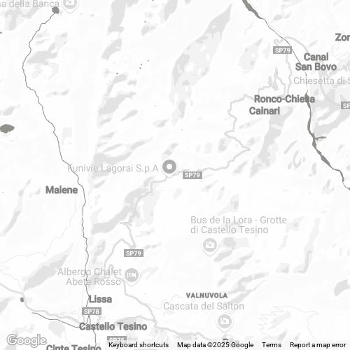

PASSO BROCCON
"Una montagna, infinite avventure"
Territorio Lagorai
Gli impianti si trovano a Località Marande, dove il piccolo altipiano
del Lagorai si apre verso il passo.

L’area nei dintorni degli impianti di risalita è conosciuta e denominata da tutti come Passo
Brocon anche se il passo vero e proprio si trova a 5 chilometri dalla stazione sciistica di
Funivie Lagorai.
Questa zona è meta di escursioni estive e passeggiate con le
ciaspole durante la stagione invernale.
La Ski Area di Passo Brocon è attrezzata ad ospitare sciatori alle prime armi come sciatori
più esperti. Riders, scialpinisti e famiglie con bambini, a ognuno il suo modo di vivere le
emozioni della neve!
Visita sito
Il Lagorai che non ti aspetti
Un piccolo altopiano immerso nella natura